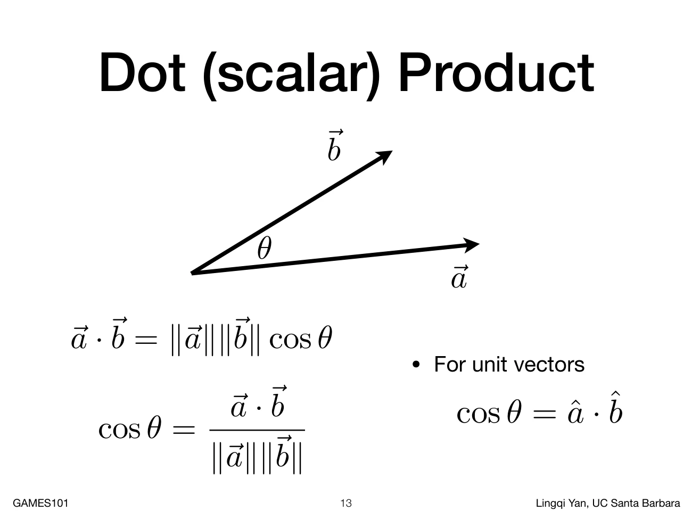
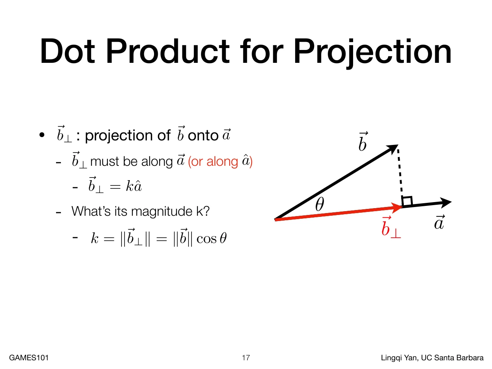
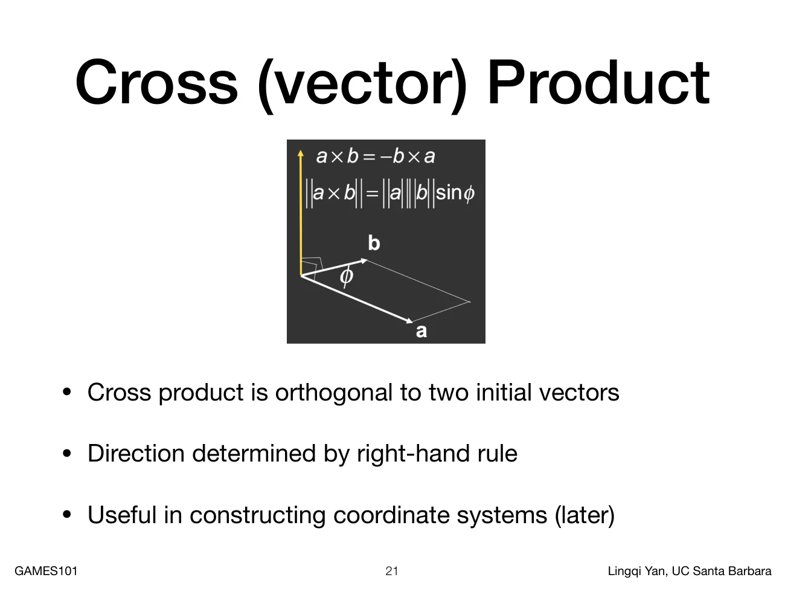
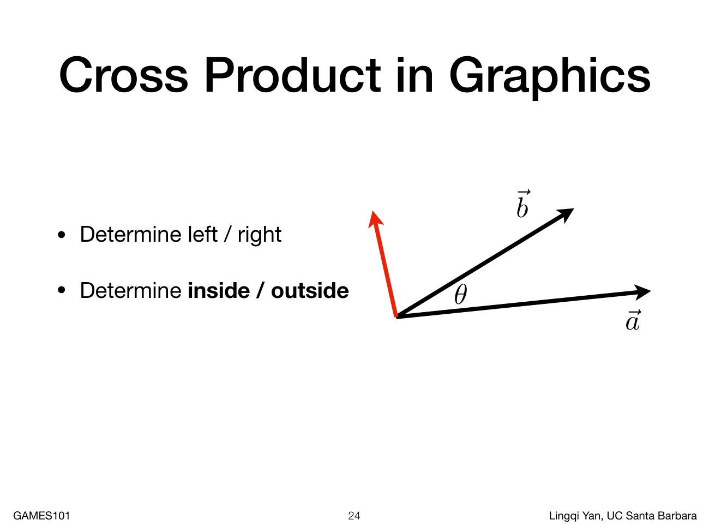
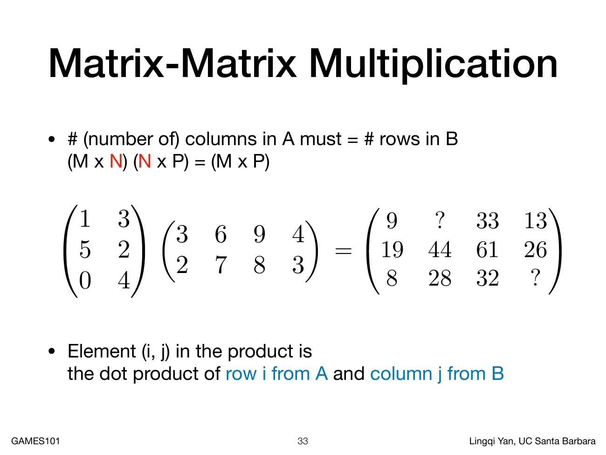
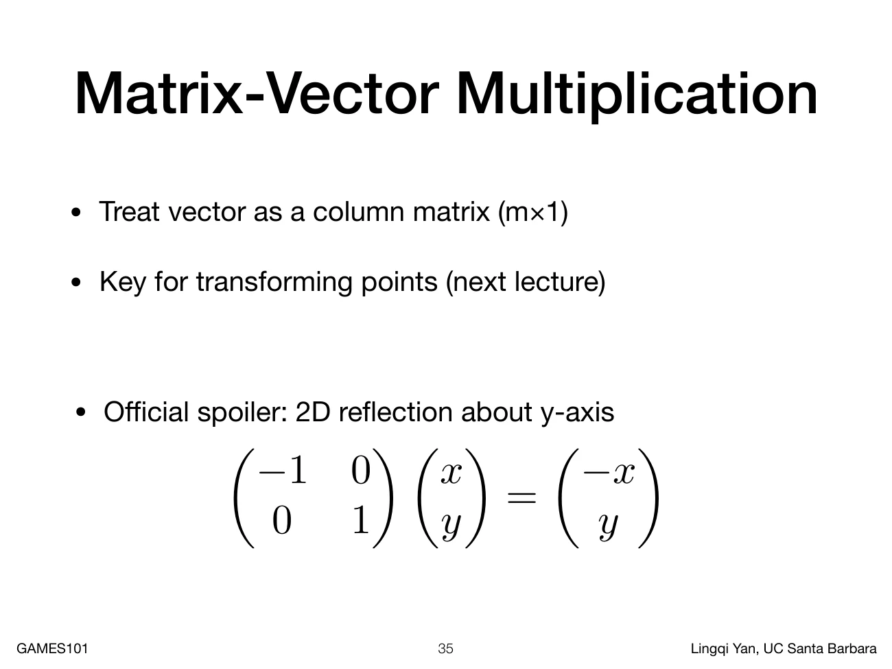
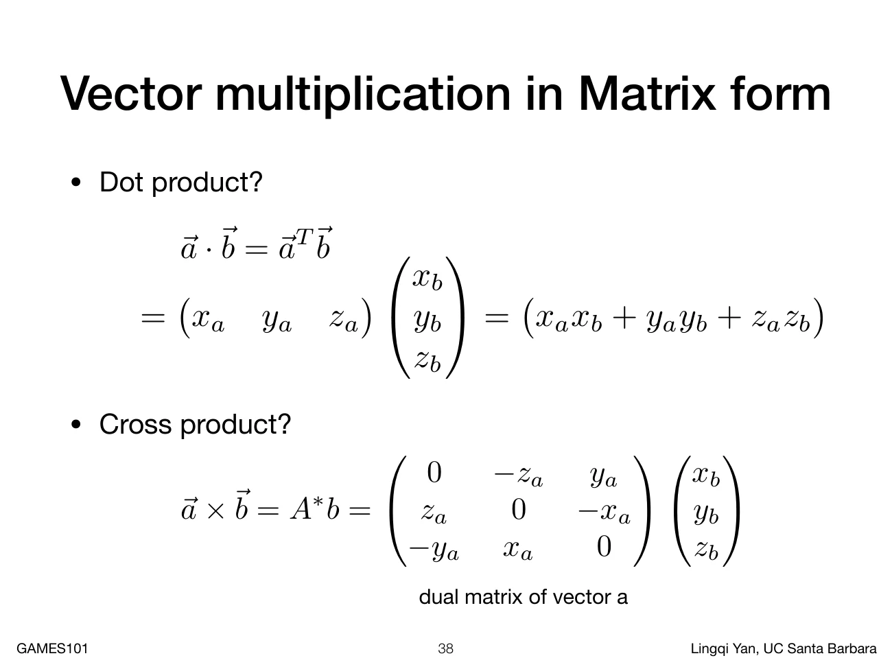
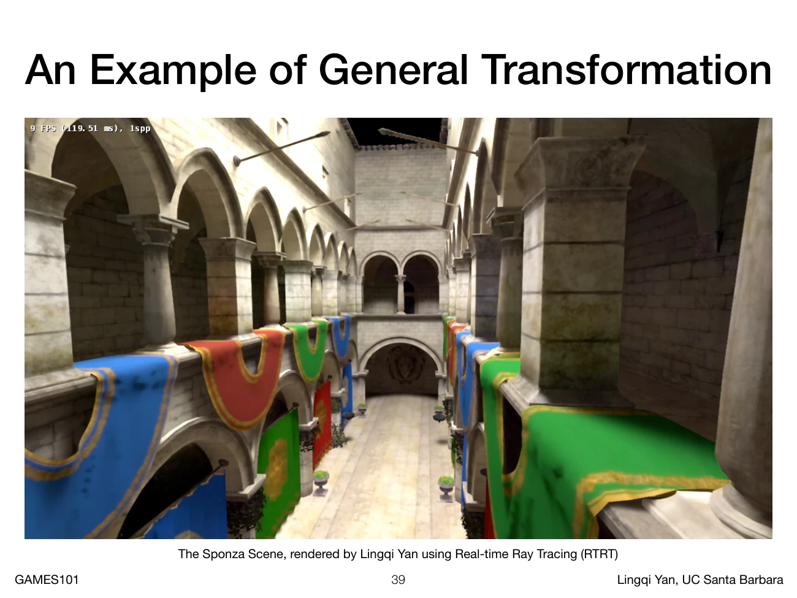

第 2 讲：线性代数复习——向量与矩阵
用图形学需要的视角快速复习向量点乘/叉乘与矩阵乘法，为后续变换与着色打基础
◆ 学完这一讲，你应该能
能说清向量为什么没有绝对起点，以及归一化在图形学中的用途
能熟练计算点乘与叉乘，并解释它们在图形学中的几何意义（夹角、投影、左右、内外）
能写出正交基/坐标系的定义，并理解坐标变换的必要性
能正确进行矩阵乘法、转置、求逆，并知道矩阵乘法不满足交换律
能把点乘和叉乘写成矩阵形式，为下一讲变换做准备
核心结论速记
向量表示方向与长度，没有固定起点；单位向量只表示方向，归一化就是除以模长。
点乘 \( \vec{a}\cdot\vec{b} = \|\vec{a}\|\|\vec{b}\|\cos\theta \)，可求夹角、投影、判断前后；单位向量点乘直接得余弦。
叉乘结果垂直于两向量，方向由右手定则决定，可用于构建坐标系、判断左右与内外。
正交基 \( \vec{u},\vec{v},\vec{w} \) 满足两两垂直且长度为 1，任意向量可表示为三个基向量的投影组合。
矩阵乘法要求左矩阵列数等于右矩阵行数，结果元素是左行点乘右列；矩阵乘法一般不可交换。
矩阵与向量相乘是变换点的关键操作；转置交换行列，逆矩阵满足 \( AA^{-1}=A^{-1}A=I \)。
点乘可写成 \( \vec{a}^T\vec{b} \)，叉乘可写成反对称矩阵（对偶矩阵）乘以向量，统一到矩阵框架。
011. 为什么图形学离不开线性代数
图形学里几乎所有东西最终都要落到“向量”和“矩阵”上：一个点的位置是向量，一个方向是向量，平移/旋转/缩放是矩阵，光照计算里求夹角用点乘，判断三角形内外用叉乘。这一讲不追求数学上的完备，而是把后续课程要用的工具快速过一遍，建立几何直觉。 \n课件里提到，图形学依赖的基础数学包括线性代数、微积分、统计，物理方面有光学和力学，另外还涉及信号处理、数值分析和一点美学。但最核心、出现频率最高的还是线性代数。比如渲染中一个像素的颜色，往往就是光照方向、法线方向、视线方向之间的一系列点乘；而物体从模型空间到世界空间再到屏幕空间，靠的是一连串矩阵乘法。 \n这一讲的目标不是让你会证明定理，而是让你看到公式时能立刻反应出“它在几何上是在干什么”。后面讲变换、着色、光线追踪时，这些工具会反复出现。
常见坑
把向量当成“带箭头的线段”而忽略它没有固定起点 → 在平移/坐标系变换时混淆点和方向 → 记住：点可以平移，方向向量不能平移。
UE / Unity 落地
UE 中 FVector 既表示位置也表示方向，但平移 Actor 时只对位置生效，方向向量（如法线）只做旋转和缩放。
Unity 的 Vector3 同理，Transform.TransformDirection 只旋转方向，不应用平移。
022. 向量：方向、长度与归一化
向量（vector）通常写成 \( \vec{a} \) 或粗体 a，也可以用起点和终点表示：\( \vec{AB} = B - A \)。它有两个属性：方向（direction）和长度（length），但没有绝对起点（no absolute starting position）。这一点在图形学里非常重要：法线、光照方向、视线方向都是“自由向量”，只关心方向和长度，不关心画在哪里。 \n向量的长度记作 \( \|\vec{a}\| \)。长度为 1 的向量叫单位向量（unit vector）。把一个向量变成单位向量的操作叫归一化（normalization）：\( \hat{a} = \vec{a} / \|\vec{a}\| \)。单位向量只保留方向信息，在光照计算里几乎所有的方向向量都会先归一化，因为点乘公式里的 \( \cos\theta \) 只有在两个向量都是单位向量时才直接等于点乘结果。 \n向量加法有两种几何理解：平行四边形法则（parallelogram law）和三角形法则（triangle law）；代数上就是对应坐标分量相加。课件还提到笛卡尔坐标（Cartesian coordinates）：用一组正交单位向量（通常是 x、y、z）作为基，一个点可以写成坐标元组，长度可以用勾股定理从分量算出。
常见坑
法线没有归一化 → 点乘结果被长度放大，光照亮度异常、高光位置偏移 → 在着色器里对法线和光照方向都做 normalize。
把位置向量和方向向量混用 → 平移方向向量导致光照方向错误 → 方向向量只做旋转/缩放，不做平移。
UE / Unity 落地
UE 的 FVector::Normalize() 会原地归一化，FVector::GetSafeNormal() 在长度过小时返回零向量，避免除零。
Unity 的 Vector3.Normalize() 原地修改，Vector3.normalized 返回新向量；着色器里常用 normalize()。
033. 点乘：夹角、投影与前后判断
点乘（dot product，也叫内积）的结果是一个标量：\( \vec{a}\cdot\vec{b} = \|\vec{a}\|\|\vec{b}\|\cos\theta \)。如果两个向量都是单位向量，那么 \( \cos\theta = \hat{a}\cdot\hat{b} \)，点乘直接给出夹角的余弦。这是图形学里最常用的公式之一，比如 Lambert 漫反射里用光照方向和法线的点乘来算亮度。 \n点乘满足交换律、分配律和数乘结合律：\( \vec{a}\cdot\vec{b} = \vec{b}\cdot\vec{a} \)，\( \vec{a}\cdot(\vec{b}+\vec{c}) = \vec{a}\cdot\vec{b} + \vec{a}\cdot\vec{c} \)，\( (k\vec{a})\cdot\vec{b} = k(\vec{a}\cdot\vec{b}) \)。在笛卡尔坐标下，点乘就是对应分量相乘再相加：二维是 \( x_a x_b + y_a y_b \)，三维再加 \( z_a z_b \)。 \n在图形学里，点乘主要有三个用途：求两个方向的夹角（衡量方向有多接近）；求一个向量在另一个向量上的投影；判断前后（forward/backward）。投影的公式是：\( \vec{b} \) 在 \( \vec{a} \) 上的投影 \( \vec{b}_\perp = \|\vec{b}\|\cos\theta \, \hat{a} \)，其长度 \( k = \|\vec{b}\|\cos\theta \)。如果点乘大于 0，说明两个方向大致同向；小于 0 则反向。这个性质在背面剔除、光照衰减、视线判断里到处都在用。


常见坑
点乘结果大于 1 或小于 -1 却直接拿去做 acos → 浮点误差导致 NaN → 先 clamp 到 [-1,1] 再 acos。
把点乘当叉乘用 → 得到标量却当成向量 → 记住点乘出标量，叉乘出向量。
UE / Unity 落地
UE 的 FVector::DotProduct(A, B) 返回标量；材质里 Dot 节点常用于计算光照方向与法线的夹角余弦。
Unity 的 Vector3.Dot 同理；Shader 里 dot(normal, lightDir) 是 Lambert 漫反射的核心。
044. 叉乘：垂直方向、左右与内外
叉乘（cross product）的结果是一个向量，它同时垂直于原来的两个向量，方向由右手定则（right-hand rule）决定。课件强调：叉乘在构建坐标系时非常有用。 \n叉乘有一些重要性质：\( \vec{x}\times\vec{y} = +\vec{z} \)，\( \vec{y}\times\vec{x} = -\vec{z} \)，即交换顺序会变号；\( \vec{a}\times\vec{a} = \vec{0} \)；叉乘对加法满足分配律，对数乘满足 \( \vec{a}\times(k\vec{b}) = k(\vec{a}\times\vec{b}) \)。这些性质说明叉乘不满足交换律，但满足反交换律。 \n在笛卡尔坐标下，叉乘可以写成行列式形式：\( \vec{a}\times\vec{b} = (y_a z_b - y_b z_a,\; z_a x_b - x_a z_b,\; x_a y_b - y_a x_b) \)。课件还给出了矩阵形式：把 \( \vec{a} \) 写成对偶矩阵（dual matrix）乘以 \( \vec{b} \)，即一个反对称矩阵与列向量的乘积。这个形式在后续推导中会用到。 \n叉乘在图形学里主要用来判断左右（left/right）和内外（inside/outside）。比如在二维平面上，用 \( \vec{a}\times\vec{b} \) 的 z 分量正负可以判断 \( \vec{b} \) 在 \( \vec{a} \) 的左侧还是右侧；在三角形内外测试中，用三条边的叉乘符号是否一致来判断点是否在三角形内部。


常见坑
叉乘顺序写反 → 法线方向朝内，光照和背面剔除全错 → 检查右手定则，必要时交换两个操作数。
在左手坐标系（如 UE）里直接套右手定则 → 叉乘方向相反 → 注意引擎坐标系手性，UE 是左手系，Unity 是左手系但叉乘实现按右手定则。
UE / Unity 落地
UE 的 FVector::CrossProduct(A, B) 按右手定则计算，但 UE 世界是左手坐标系，构建正交基时要注意顺序。
Unity 的 Vector3.Cross 也是右手定则；计算三角形法线时常用 Cross(b-a, c-a) 并注意顶点绕序。
055. 正交基与坐标系：为什么需要多套坐标
正交基（orthonormal basis）是一组两两垂直且长度为 1 的向量。在三维中，如果 \( \vec{u},\vec{v},\vec{w} \) 满足 \( \|\vec{u}\|=\|\vec{v}\|=\|\vec{w}\|=1 \)，\( \vec{u}\cdot\vec{v}=\vec{v}\cdot\vec{w}=\vec{u}\cdot\vec{w}=0 \)，并且 \( \vec{w} = \vec{u}\times\vec{v} \)（右手系），那么它们就构成一个正交坐标系。任意向量 \( \vec{p} \) 可以表示为它在三个基向量上的投影之和：\( \vec{p} = (\vec{p}\cdot\vec{u})\vec{u} + (\vec{p}\cdot\vec{v})\vec{v} + (\vec{p}\cdot\vec{w})\vec{w} \)。 \n图形学里有很多套坐标系：全局（global）、局部（local）、世界（world）、模型（model），甚至模型内部的各个部件（头、手等）都有自己的坐标系。关键问题是：如何在这些坐标系之间变换？这是下一讲的主题。但这一讲先建立概念：同一个点在不同坐标系下有不同的坐标表示，变换就是换一套基。 \n课件特别指出，正交基对表示点、位置、地点非常重要。在渲染管线里，模型空间到世界空间的变换、世界空间到相机空间的变换，本质上都是换基。理解这一点，后面学矩阵变换就不会觉得是死记硬背。
常见坑
基向量不正交或未归一化 → 投影公式失效，坐标变换出现拉伸 → 构建基时先归一化，再用叉乘保证垂直。
混淆左手系和右手系 → 叉乘方向、旋转方向相反 → 在 UE 里注意其左手坐标系，Unity 也是左手系，但数学公式常按右手系写。
UE / Unity 落地
UE 的 Actor 有 World Transform 和 Relative Transform，对应世界坐标和父空间坐标，本质是不同基之间的变换。
Unity 的 Transform.localToWorldMatrix 和 worldToLocalMatrix 就是坐标系变换矩阵。
066. 矩阵：乘法、转置与逆
矩阵（matrix）是二维数组，m 行 n 列。矩阵加法与数乘都是逐元素操作。矩阵乘法要求左矩阵的列数等于右矩阵的行数：\( (M\times N)(N\times P) = (M\times P) \)。结果矩阵的第 (i,j) 个元素是左矩阵第 i 行与右矩阵第 j 列的点乘。 \n矩阵乘法不满足交换律：一般情况下 \( AB \neq BA \)。但它满足结合律和分配律：\( (AB)C = A(BC) \)，\( A(B+C) = AB + AC \)，\( (A+B)C = AC + BC \)。这一点在图形学里很重要，因为变换的顺序会影响最终结果，比如先旋转再平移和先平移再旋转完全不同。 \n矩阵与向量相乘时，把向量看成列矩阵（m×1），这是变换点的关键操作。课件给了一个“剧透”：二维关于 y 轴的反射矩阵是 \( \begin{pmatrix} -1 & 0 \\ 0 & 1 \end{pmatrix} \)，乘以 \( (x, y)^T \) 得到 \( (-x, y)^T \)。 \n转置（transpose）交换行和列，记作 \( A^T \)，满足 \( (AB)^T = B^T A^T \)。单位矩阵 \( I \) 满足 \( IA = AI = A \)。逆矩阵 \( A^{-1} \) 满足 \( AA^{-1} = A^{-1}A = I \)，并且 \( (AB)^{-1} = B^{-1}A^{-1} \)。注意逆矩阵的顺序也反过来了。


常见坑
矩阵乘法顺序写反 → 变换结果与预期不符 → 记住列向量右乘，先应用的变换在右边。
求逆时忘记顺序反转 → \( (AB)^{-1} \neq A^{-1}B^{-1} \) → 正确是 \( B^{-1}A^{-1} \)。
UE / Unity 落地
UE 的 FMatrix 乘法顺序与数学一致，但蓝图里 Transform 节点的组合顺序容易搞混，注意先缩放、再旋转、最后平移。
Unity 的 Matrix4x4 乘法同样不满足交换律，TRS 顺序是先缩放、再旋转、再平移。
077. 用矩阵统一表示点乘与叉乘
课件最后把点乘和叉乘都写成矩阵形式，目的是让后续的变换和推导更统一。 \n点乘可以写成 \( \vec{a}\cdot\vec{b} = \vec{a}^T\vec{b} \)：把 \( \vec{a} \) 转置成行向量，再乘以列向量 \( \vec{b} \)，结果是一个 1×1 矩阵，也就是标量。展开就是 \( x_a x_b + y_a y_b + z_a z_b \)。 \n叉乘可以写成 \( \vec{a}\times\vec{b} = A^*\vec{b} \)，其中 \( A^* \) 是 \( \vec{a} \) 的对偶矩阵（dual matrix），一个反对称矩阵： \[ A^* = \begin{pmatrix} 0 & -z_a & y_a \\ z_a & 0 & -x_a \\ -y_a & x_a & 0 \end{pmatrix} \]\n乘以 \( \vec{b} \) 后得到 \( (y_a z_b - z_a y_b,\; z_a x_b - x_a z_b,\; x_a y_b - y_a x_b) \)，正好是叉乘的结果。这个形式在推导旋转矩阵、法线变换时很有用。 \n这一讲的内容是后面所有变换、着色、光线追踪的数学基础。课件最后用 Sponza 场景的实时光线追踪渲染图作为例子，说明这些数学最终会变成画面。下一讲正式进入变换（Transform）。


常见坑
对偶矩阵符号写错 → 叉乘结果方向相反 → 检查反对称矩阵中 \( -z_a, -x_a, -y_a \) 的位置。
把 \( \vec{a}^T\vec{b} \) 和 \( \vec{a}\vec{b}^T \) 混淆 → 前者是标量，后者是矩阵 → 注意转置在哪个向量上。
UE / Unity 落地
UE 的 FVector::DotProduct 和 CrossProduct 内部就是这些公式，材质编辑器里的 Dot 节点对应点乘。
Unity Shader 里 dot(a,b) 和 cross(a,b) 是内置函数，矩阵乘法用 mul(M, v)。
引擎对照表
| 概念 / 效果 | Unreal Engine | Unity |
|---|---|---|
向量点乘 | FVector::DotProduct / 材质 Dot 节点 | Vector3.Dot / Shader dot() |
向量叉乘 | FVector::CrossProduct | Vector3.Cross / Shader cross() |
归一化 | FVector::GetSafeNormal() | Vector3.normalized / Shader normalize() |
矩阵乘法 | FMatrix 乘法运算符 | Matrix4x4 乘法 / Shader mul() |
坐标变换 | Actor 的 World/Relative Transform | Transform.localToWorldMatrix |
正交基 | FRotationMatrix 构建基向量 | Quaternion 转 Matrix4x4 |
术语双语表
| English | 中文 | 说明 |
|---|---|---|
| Vector | 向量 | 有方向和大小的量，没有固定起点。 |
| Normalization | 归一化 | 把向量除以自身长度，得到单位向量。 |
| Dot Product | 点乘 | 结果标量，等于两向量长度乘夹角余弦。 |
| Cross Product | 叉乘 | 结果向量，垂直于两输入向量，方向由右手定则决定。 |
| Orthonormal Basis | 正交基 | 两两垂直且长度为 1 的一组基向量。 |
| Matrix Multiplication | 矩阵乘法 | 左矩阵行点乘右矩阵列，一般不满足交换律。 |
| Transpose | 转置 | 交换矩阵的行和列。 |
| Inverse Matrix | 逆矩阵 | 满足 AA^{-1}=I 的矩阵，顺序反转规则 (AB)^{-1}=B^{-1}A^{-1}。 |
| Dual Matrix | 对偶矩阵 | 把叉乘写成反对称矩阵乘向量的形式。 |
课后练习
01 已知 \( \vec{a}=(1,2,2) \)，求它的单位向量。
查看答案
提示：
先算长度。
\( \|\vec{a}\|=\sqrt{1+4+4}=3 \)，单位向量为 \( (1/3, 2/3, 2/3) \)。
02 已知 \( \vec{a}=(1,0,0) \)，\( \vec{b}=(0,1,0) \)，求 \( \vec{a}\times\vec{b} \) 和 \( \vec{b}\times\vec{a} \)，并说明方向。
查看答案
提示：
用右手定则。
\( \vec{a}\times\vec{b}=(0,0,1) \)，\( \vec{b}\times\vec{a}=(0,0,-1) \)。叉乘交换顺序变号。
03 判断点 P 是否在三角形 ABC 内部，写出用叉乘的判断思路。
查看答案
提示：
看三条边的叉乘符号是否一致。
分别计算 \( \vec{AB}\times\vec{AP} \)、\( \vec{BC}\times\vec{BP} \)、\( \vec{CA}\times\vec{CP} \) 的 z 分量，如果三个符号相同（全正或全负），则 P 在三角形内部。
04 矩阵 A 是 3×2，矩阵 B 是 2×4，AB 的维度是多少？BA 能乘吗？
查看答案
提示：
看列数和行数是否匹配。
AB 是 3×4；BA 要求 B 的列数 4 等于 A 的行数 3，不成立，所以 BA 不能乘。
05 在 UE 里，为什么法线向量不能直接加上平移？
查看答案
提示：
方向向量没有起点。
法线表示方向，不是位置，平移会改变它的起点但没有几何意义，还会导致光照方向错误。方向向量只应做旋转和缩放（并重新归一化）。